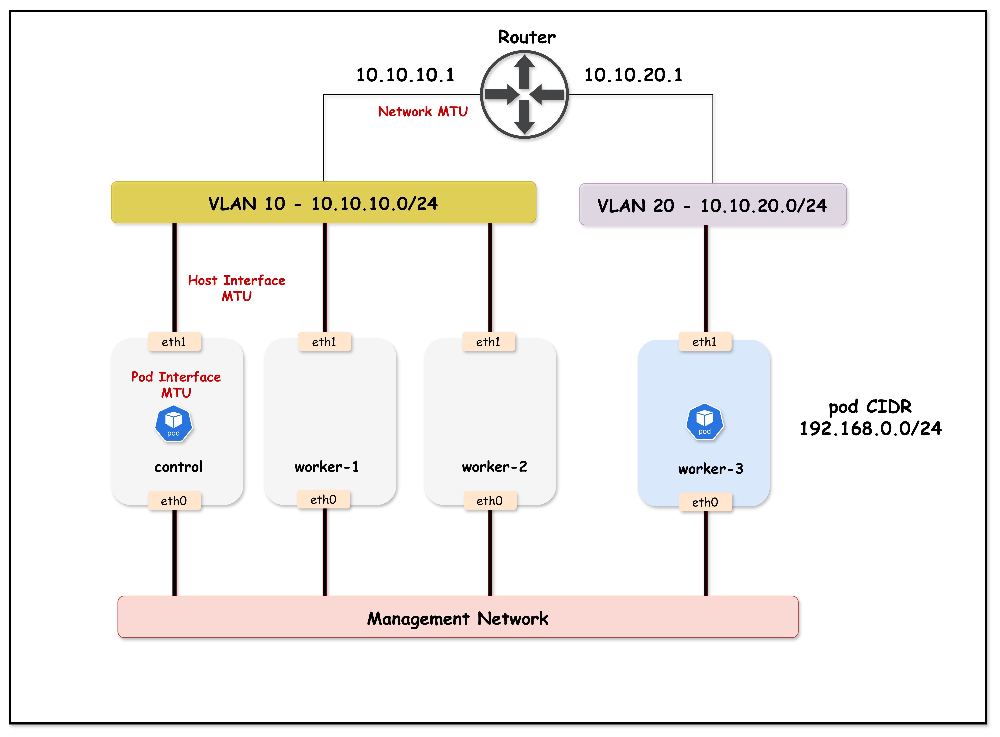

payload 8900 + 28Lesson 18 · MTU · VXLAN · PMTUD · RPF
Calico MTU
从 Pod 接口到跨 VLAN 路径
小包能通、TLS 却超时，通常不是应用问题。沿 Pod、VXLAN、Host、SVI 四层检查最小 MTU，才能找到真正的瓶颈。
1450 → 8950VXLAN − 50DFICMP type 3 code 4
ENCAP
outer size 8978PATH
8978 ≤ 9000PASS规则：Pod MTU 不超过最小 underlay MTU 减去封装开销
The deceptive symptom
小 ping 正常而 TLS 超时，是典型 MTU 线索
ping 正常
0.3 ms报文远小于所有接口 MTU。
连接开始正常
small packets pass三次握手和 ClientHello 仍能通过。
响应卡住
SSL timeout较大的 DF 数据包撞上路径瓶颈。
排障信号：“小包能通，大包失败”比“完全不通”更像 MTU 或 PMTUD 问题。
02
Three related sizes
MTU、帧长与 MSS 是三个不同边界
二层帧
包含 Ethernet header、IP packet，线上还会有 FCS 和前导码等开销。
不等同于 IP MTU最大 IP 包
接口能承载的 IP header、传输层 header 与 payload 总和。
通常不含 Ethernet header最大 TCP 数据
TCP 在一个 segment 中愿意接收的应用数据上限。
IPv4 常用近似 MTU − 40课程公式按 IPv4、无额外 IP/TCP 选项简化：MSS = MTU - 20 - 20。IPv6 基础头为 40 字节，封装开销也不同。
03
Packet anatomy
1500 MTU 中，IPv4 TCP payload 通常最多 1460 字节
Ethernet
14 B
14 B
IPv4
20 B
20 B
TCP
20 B
20 B
Payload
1460 B
1460 B
Ethernet frame carries the IP packetMTU = 20 + 20 + 1460 = 1500 BMSS = 1460 B
UDP
UDP header 是 8 B，同样 MTU 下可留给 payload 的空间更大。
Jumbo 9000
IPv4 TCP 的简化 MSS 为 9000 - 40 = 8960。
04
Calico overhead reference
封装类型决定 Pod MTU 要预留多少字节
| Underlay MTU | 无封装 | IPv4 IP-in-IP | IPv4 VXLAN | IPv6 VXLAN | IPv4 WireGuard |
|---|---|---|---|---|---|
| 1500 | 1500 | 1480 | 1450 | 1430 | 1440 |
| 9000 | 9000 | 8980 | 8950 | 8930 | 8940 |
| 9001 | 9001 | 8981 | 8951 | 8931 | 8941 |
IP-in-IP: 20 BIPv4 VXLAN: 50 BIPv6 VXLAN: 70 BIPv4 WireGuard: 60 BIPv6 WireGuard: 80 B
选择原则：使用所有可能路径中的最小 MTU，并减去该路径可能使用的最大封装开销。
05
Course topology
原课件拓扑：三个节点在 VLAN 10，worker3 在 VLAN 20

k01-no-cni.yaml 的 Pod CIDR 是 192.168.0.0/16，图中 /24 仅作为示意。06
Exact node addressing
节点地址与三层路由由 Containerlab 明确配置
Arista cEOSL3 routing
Vlan10 ↔ Vlan20静态路由：VLAN 10 节点经
10.10.10.1 到 10.10.20.0/24，worker3 经 10.10.20.1 到 10.10.10.0/24。07
containerlab/18-mtu
六类文件共同定义拓扑、CNI、工作负载与交换机
cEOS、Kind 外部容器、eth1 链路与静态路由。
四节点、Node IP、Pod / Service CIDR。
VXLANCrossSubnet、IPPool 与地址探测。
偏好 worker3，也就是 VLAN 20。
偏好 worker，也就是 VLAN 10。
VLAN、access port、SVI 与初始 9000 MTU。
08
The timing matters
deploy.sh 在 Calico 安装完成后才把节点 eth1 提升到 9000
启动拓扑
containerlab deploy安装 Calico 3.30
mtu not set等待 TigeraStatus
Available=True设置 eth1
ip link set eth1 mtu 9000创建测试 Pod
Pod eth0 = 1450$ cd containerlab/18-mtu $ chmod +x deploy.sh $ ./deploy.sh $ export KUBECONFIG=$(pwd)/mtu-lab.kubeconfig
09
Startup configuration
cEOS 的 access port 与两个 SVI 初始都使用 9000 MTU
interface Ethernet1 switchport access vlan 10 mtu 9000 ... interface Ethernet4 switchport access vlan 20 mtu 9000
interface Vlan10 ip address 10.10.10.1/24 mtu 9000 interface Vlan20 ip address 10.10.20.1/24 mtu 9000 ip routing
初始状态不存在 underlay 瓶颈。Part 2 会只把 Vlan20 SVI 降到 1500，故意制造路由出口 MTU 不一致。
10
custom-resources.yaml
Installation 启用 VXLANCrossSubnet，但没有显式 mtu
apiVersion: operator.tigera.io/v1 kind: Installation metadata: name: default spec: calicoNetwork: ipPools: - cidr: 192.168.0.0/16 encapsulation: VXLANCrossSubnet natOutgoing: Enabled disableBGPExport: true nodeAddressAutodetectionV4: cidrs: [10.10.0.0/16]
由 Operator / Felix 自动探测和生成。
不同 Node 子网之间才使用 VXLAN。
只从实验数据面地址范围选择。
11
VXLANCrossSubnet
同一子网直接路由，跨子网才增加 50 字节 VXLAN 开销
DIRECT
VXLAN +50
10.10.10.0/24 内
Calico 不加 VXLAN 头，但 Pod MTU 仍按全局安全值设置。
到 10.10.20.0/24
跨 Node 子网使用 VXLAN，必须预留 IPv4 50 B。
12
Pod placement intent
客户端偏好 worker，服务端偏好 worker3
netshoot-client
k01-workerpreferred affinitycross VLAN
netshoot-server
k01-worker3preferred affinity清单语义：preferredDuringSchedulingIgnoredDuringExecution 不是硬约束。每次演示都要用 kubectl get pods -o wide 验证实际节点。
13
Verify before testing
四个 Node IP 和两个 Pod 落点必须与拓扑一致
$ kubectl get nodes -o wide NAME STATUS INTERNAL-IP k01-control-plane Ready 10.10.10.10 k01-worker Ready 10.10.10.11 k01-worker2 Ready 10.10.10.12 k01-worker3 Ready 10.10.20.20 $ kubectl get pods -o wide NAME IP NODE netshoot-client 192.168.x.x k01-worker netshoot-server 192.168.x.x k01-worker3
不要照抄 Pod IP：用 JSONPath 动态读取服务端地址，课程输出中的
192.168.x.x 只代表一次分配结果。14
Workload interface
本实验首次创建的 Pod eth0 MTU 是 1450
$ kubectl exec netshoot-client -- ip link show eth0 3: eth0@if7: <BROADCAST,MULTICAST,UP,LOWER_UP> mtu 1450 qdisc noqueue state UP mode DEFAULT group default qlen 1000 link/ether 3a:45:67:89:ab:cd ...
install-time path1500−IPv4 VXLAN50=workload MTU1450
1450 是本实验的观测结果，不是所有 Calico 集群永远固定的默认值。未设置时，当前 Calico 会依据节点接口和已启用封装自动探测。
15
Host and workload differ
Host eth1 已经是 9000，但 Pod 不会自动跟着变大
eth0
MTU 1450CNI 创建时写入。
veth pair
eth1
MTU 9000deploy.sh 后续修改。
$ docker exec k01-worker ip link show eth1 | grep mtu eth1@if...: <BROADCAST,MULTICAST,UP,LOWER_UP> mtu 9000 ...
关键：Host 能发大包，不代表 Pod veth 也能发。Linux 会先在 Pod eth0 处执行本地 MTU 检查。
16
Path budget
端到端可用 MTU 由路径中最小边界决定
Effective Pod MTU = min(all underlay paths − encapsulation overhead, workload interface MTU)
17
Small packets pass
默认 ping 只有 84 字节 IP 包，1450 足够承载
$ SERVER_IP=$(kubectl get pod netshoot-server \ -o jsonpath='{.status.podIP}') $ kubectl exec netshoot-client -- ping -c 3 $SERVER_IP PING 192.168.x.x 56(84) bytes of data. 64 bytes from 192.168.x.x: icmp_seq=1 ttl=62 time=0.543 ms 64 bytes from 192.168.x.x: icmp_seq=2 ttl=62 time=0.321 ms 64 bytes from 192.168.x.x: icmp_seq=3 ttl=62 time=0.298 ms
ICMP payload 56+ICMP header 8+IPv4 header 20=84 B
18
Probe the boundary
8900 字节 payload 加 DF，直接撞上 Pod MTU
$ kubectl exec netshoot-client -- \ ping -c 3 -s 8900 -M do $SERVER_IP PING 192.168.x.x 8900(8928) bytes of data. ping: local error: message too long, mtu=1450 ping: local error: message too long, mtu=1450 ping: local error: message too long, mtu=1450
-c 3 发 3 次-s 8900 ICMP payload-M do 设置 DF，禁止分片
19
The packet never leaves
8928 大于 1450，内核在 Pod eth0 立即拒绝
DF=18928 B
×
0 packets观察点：这种错误来自发送端本机，和中间设备丢包造成的静默超时不同。
20
Read ping output correctly
8900、8908、8928 分别对应 payload、ICMP 与 IP
ICMP data payload
payload + ICMP header
total IPv4 packet
VXLAN 后：跨子网时再增加 50 B，outer IP packet 约为
8928 + 50 = 8978，仍小于 underlay 9000。21
Explicit target
9000 underlay 配 IPv4 VXLAN，Pod MTU 取 8950
Underlay path MTU9000−IPv4 VXLAN overhead50=Calico workload MTU8950
公式要使用真实路径最小值。任何中间 VLAN、云网络、VPN 或物理口小于 9000，都必须按更小值重新计算。
22
Operator-managed installation
通过 Installation 的 calicoNetwork.mtu 显式配置 8950
$ kubectl patch installation default --type='merge' \ -p '{"spec":{"calicoNetwork":{"mtu":8950}}}' installation.operator.tigera.io/default patched $ kubectl get installation default \ -o jsonpath='{.spec.calicoNetwork.mtu}' 8950
Operator 安装
修改 Installation/default，由 Operator 协调组件配置。
Manifest 安装
官方文档使用 calico-config 的 veth_mtu，并重启 calico-node。
23
Existing Pods keep their veth
MTU 修改只影响后续创建的 workload interface
netshoot-client
eth0 MTU 1450veth 已创建，配置不会原地变更。
Installationmtu: 8950
recreated client
eth0 MTU 8950CNI ADD 读取新配置。
升级计划：生产调整 MTU 后，要通过受控 rollout 重建工作负载，并考虑旧 Pod 与新 Pod 共存期间的连接行为。
24
Re-run CNI ADD
删除并重新创建两个 netshoot Pod
$ kubectl delete pod netshoot-client netshoot-server $ kubectl apply -f tools/01-netshoot-server.yaml $ kubectl apply -f tools/02-netshoot-client.yaml $ kubectl wait --for=condition=ready \ pod/netshoot-client pod/netshoot-server --timeout=60s pod/netshoot-client condition met pod/netshoot-server condition met
重建后重新执行 kubectl get pods -o wide。preferred affinity 仍可能让 Pod 落到非预期节点。
25
Workload interface updated
新 Pod eth0 现在显示 8950
$ kubectl exec netshoot-client -- ip link show eth0 3: eth0@if9: <BROADCAST,MULTICAST,UP,LOWER_UP> mtu 8950 qdisc noqueue state UP mode DEFAULT group default qlen 1000 link/ether 3a:45:67:89:ab:cd ...
来自早期自动探测配置。
显式覆盖。
CNI 创建新 veth。
26
End-to-end success
8928 字节 Pod 包封装后为 8978，能穿过 9000 underlay
eth0 MTU 8950PASS
outer 8978VLAN 10 → 20
8978 ≤ 9000DECAP
success$ SERVER_IP=$(kubectl get pod netshoot-server -o jsonpath='{.status.podIP}') $ kubectl exec netshoot-client -- ping -c 3 -s 8900 -M do $SERVER_IP 8908 bytes from 192.168.x.x ...
27
Part 1 evidence
Pod MTU 从 1450 调到 8950 后，大包测试由失败变为成功
| 阶段 | Pod eth0 | Host eth1 | 8900 payload + DF | 结论 |
|---|---|---|---|---|
| 初始 | 1450 | 9000 | local error | Pod 接口先拦截 |
| 显式配置后 | 8950 | 9000 | 3/3 success | VXLAN 后 8978 可通过 |
把自动探测结果改成符合 jumbo underlay 的明确值。
旧 veth 不会随配置原地更新。
28
Infrastructure baseline
两个 VLAN SVI 初始都为 9000
$ docker exec -it clab-mtu-lab-ceos01 Cli ceos> enable ceos# show ip interface brief Interface IP Address Status Protocol MTU Management0 172.20.20.x/24 up up 1500 Vlan10 10.10.10.1/24 up up 9000 Vlan20 10.10.20.1/24 up up 9000
Management0 的 1500 只服务管理网络。跨 VLAN 数据面由 Vlan10 与 Vlan20 SVI 转发，两者当前都是 9000。
29
Cross-VLAN control-plane traffic
VLAN MTU 正常时，worker3 可以访问 Kubernetes API
10.10.20.20HTTPS 6443
MTU 9000 / 9000TLS
10.10.10.10:6443$ docker exec k01-worker3 curl -k --connect-timeout 10 \ https://10.10.10.10:6443/healthz ok
30
Create a controlled mismatch
只把 Vlan20 SVI 降到 1500
$ docker exec -it clab-mtu-lab-ceos01 Cli ceos> enable ceos# configure terminal ceos(config)# interface Vlan20 ceos(config-if-Vl20)# mtu 1500 ceos(config-if-Vl20)# exit ceos(config)# end ceos# show ip interface brief
保持不变
故障注入
仍发送 jumbo
31
Verify the fault injection
show ip interface brief 显示唯一不一致的是 Vlan20
Interface IP Address Status Protocol MTU Management0 172.20.20.x/24 up up 1500 Vlan10 10.10.10.1/24 up up 9000 Vlan20 10.10.20.1/24 up up 1500
control-plane eth19000→Vlan109000→Vlan201500→worker3 eth19000
Path MTU = 1500：两端接口都支持 9000，仍然不能跨过中间 1500 的出口。
32
Why only worker3 fails
同 VLAN 流量绕过 SVI，跨 VLAN 流量必须经过 SVI
worker → API
workerL2 switchcontrol-plane
ok不经过 Vlan20 SVI。
worker3 → API
worker3Vlan20 1500control-plane
timeout必须经过三层 SVI。
$ docker exec k01-worker curl -k --connect-timeout 10 https://10.10.10.10:6443/healthz ok
33
Routed path black hole
较大的 DF 数据包在 Vlan20 1500 处被丢弃
TCP length 1664, DF1664 B
ROUTE
×
SSL timeout$ docker exec k01-worker3 curl -k --connect-timeout 10 https://10.10.10.10:6443/healthz curl: (28) SSL connection timeout
34
Why TLS reveals the issue
TLS 证书链产生较多数据，更容易暴露错误的 MSS 与 Path MTU
TCP handshake
smallSYN / SYN-ACK / ACK 通过。
ClientHello
200–500 B通常仍小于 1500。
Server flight
certificate data证书链让服务端发送更多 TCP 数据。
Worker3
waits关键数据段未到达。
准确理解：TLS 证书链是应用数据，不等于一个固定 4 KB IP 包。真正是否超 MTU，由 TCP 分段、双方 MSS、PMTU 缓存和 offload 共同决定；本实验抓到的是 1664 B DF IP 包。
35
Path MTU Discovery
Linux TCP 使用 DF 与 ICMP 反馈学习更小的 Path MTU
Sender
按本地 route / MSS 发送 DF IP 包。
Bottleneck
发现 packet size 超过出口 MTU。
ICMP feedback
返回 Fragmentation Needed 和 MTU 1500。
Route cache
发送端缓存 PMTU，后续缩小 segment。
反馈能回来
发送端学习 1500，TCP 用更小 MSS，连接可恢复。
反馈被丢弃
发送端反复发送过大 DF 包，形成 PMTUD black hole。
36
Fragmentation Needed
IPv4 的关键信号是 ICMP Type 3 Code 4
length 1664 · DF=1Vlan20 MTU 1500cannot fragment
need to frag · mtu 1500$ docker exec k01-control-plane tcpdump -i any -nn -vv \
'icmp[icmptype] == 3 and icmp[icmpcode] == 4'
37
Three-terminal setup
课程使用三个终端同时观察请求、交换机与 ICMP
control-plane tcpdump
捕获 ICMP Type 3 Code 4。
tcpdump -i any ...cEOS mirror
在交换机 mirror0 查看 ICMP 与 6443。
monitor session sniffworker3 curl
触发跨 VLAN TLS 连接。
curl .../healthz远程实验可新开 SSH 会话，每个终端都进入 containerlab/18-mtu 并设置同一份 KUBECONFIG。
38
Terminal 1
control-plane 上的 tcpdump 捕获 need to frag
$ docker exec k01-control-plane tcpdump -i any -nn -vv \ 'icmp[icmptype] == 3 and icmp[icmpcode] == 4' IP 172.20.20.2 > 10.10.10.10: ICMP 10.10.20.20 unreachable - need to frag (mtu 1500) IP 10.10.10.10.6443 > 10.10.20.20.54108: flags [DF], proto TCP, length 1664
source 172.20.20.2reported MTU 1500original DF=1original length 1664
39
Terminal 2 · optional
可选 monitor session 能在 cEOS 内部看到相同 ICMP
ceos# configure terminal ceos(config)# monitor session sniff \ source Ethernet1 both ceos(config)# monitor session sniff \ destination cpu ceos# show monitor session
ceos# bash bash-5.1# tcpdump -i mirror0 -n \ 'icmp or port 6443' 802.1Q vlan 10 ... ceos > 10.10.10.10: ICMP ... need to frag (mtu 1500)
演示结束必须关闭：no monitor session sniff，并用 Ctrl+C 停止两个 tcpdump。
40
Read one capture line
DF、1664 与 mtu 1500 构成完整丢包证据
交换机管理接口地址。
出口不能承载且原始包禁止分片。
Vlan20 当前出口 MTU。
API server 发往 worker3 的 TCP 包。
$ docker exec k01-control-plane tcpdump -i eth1 host 10.10.20.20 -vv
IP ... flags [DF], proto TCP, length 1664
41
Unexpected ICMP source
ICMP 从管理地址发出，严格 RPF 认为回程接口不匹配
data VLAN 10cEOS managementmanagement path / default routepacket silently dropped结果：tcpdump 在入口可以看到 ICMP，不代表 Linux 网络栈会接受并更新 PMTU。
42
The PMTUD black hole
严格 RPF 丢弃 ICMP，发送端无法学习 Path MTU
src 172.20.20.2eth1
reverse route mismatch×
no updateRETRY LARGE
keeps waiting43
Verify before changing
本实验 control-plane 的 all.rp_filter 为严格模式 1
$ docker exec k01-control-plane \ sysctl net.ipv4.conf.all.rp_filter net.ipv4.conf.all.rp_filter = 1
Disabled
不做 source validation。
Strict
source 必须能从当前入接口反向到达。
实验初始值Loose
source 只要能从任意接口到达即可。
Linux IPv4 RPF 的有效行为还受 all 与具体接口设置共同影响。排障时应同时查看 all、default 和入接口值。
44
Security tradeoff
Loose RPF 只用于证明 PMTUD，不是生产修复方案
| 值 | 模式 | 检查 | 实验用途 | 生产风险 |
|---|---|---|---|---|
| 0 | Disabled | 不验证 source | 不使用 | 最弱防伪造 |
| 1 | Strict | 反向路径必须匹配入接口 | 初始状态 | 通常推荐 |
| 2 | Loose | source 经任意接口可达即可 | 证明 ICMP 可驱动 PMTUD | 削弱源地址校验 |
课程原则：最终修复是让所有网络层 MTU 一致，而不是永久放宽 RPF。
45
Demonstration only
临时设置 rp_filter=2 后，ICMP 可以更新 PMTU 缓存
$ docker exec k01-control-plane \ sysctl -w net.ipv4.conf.all.rp_filter=2 net.ipv4.conf.all.rp_filter = 2 $ docker exec k01-worker3 curl -k --connect-timeout 10 \ https://10.10.10.10:6443/healthz ok
安全警告：这一步只用于实验。演示完成必须恢复 rp_filter=1，并修复 Vlan20 MTU。
46
Feedback closes the loop
ICMP 被接受后，route cache 学到 1500 并缩小 TCP segment
mtu 1500ICMP
source routable anywhereCACHE
expires 192 secMSS 1460
healthz = ok47
Observe TCP negotiation
SYN 与 SYN-ACK 显示 8960 和 1460 两个 MSS
$ docker exec k01-control-plane tcpdump -i eth1 \ host 10.10.20.20 -vv | grep mss 10.10.20.20.34458 > 10.10.10.10.6443: Flags [S], options [mss 8960,...] 10.10.10.10.6443 > 10.10.20.20.34458: Flags [S.], options [mss 1460,...]
基于本地 9000 接口。
基于已缓存 PMTU 1500。
双方各自不能发送超过对端宣告的 MSS。
48
Kernel evidence
ip route get 直接显示目标路径缓存的 mtu 1500
$ docker exec k01-control-plane \ ip route get 10.10.20.20 10.10.20.20 via 10.10.10.1 dev eth1 \ src 10.10.10.10 uid 0 cache expires 192sec mtu 1500
49
Undo the diagnostic change
PMTUD 机制验证结束后，把 RPF 恢复为严格模式
仅用于证明 ICMP feedback 可以驱动 PMTUD。
回到实验初始安全设置。
$ docker exec k01-control-plane \ sysctl -w net.ipv4.conf.all.rp_filter=1 net.ipv4.conf.all.rp_filter = 1
50
Fix the infrastructure
把 Vlan20 恢复到 9000，跨 VLAN TLS 再次稳定成功
ceos# configure terminal ceos(config)# interface Vlan20 ceos(config-if-Vl20)# mtu 9000 ceos(config-if-Vl20)# exit ceos(config)# end ceos# exit
$ docker exec k01-worker3 curl -k \ --connect-timeout 10 \ https://10.10.10.10:6443/healthz ok
Host 9000+Vlan10 9000+Vlan20 9000+Pod 8950= consistent path
51
Design checklist
生产 MTU 设计应从最小路径和全部封装模式反推
枚举所有路径
同节点、同子网、跨 AZ、专线、VPN、出口网关。
找最小 underlay MTU
不要只看 NIC，要包含 SVI、云网络和中间隧道。
扣除最大封装开销
VXLAN、IP-in-IP、WireGuard 或组合迁移阶段。
显式配置并滚动重建
Operator Installation 或 manifest ConfigMap。
用 DF 大包实测
从多个节点、多个网段验证双向数据面。
监控 ICMP 与重传
关注 Frag Needed、TCP retransmission 和超时。
52
Troubleshooting ladder
沿 Pod、Tunnel、Host、SVI、PMTUD 六层找第一个断点
Pod veth
ip link show eth0当前 workload MTU。
Calico config
get installation显式值或自动探测。
Tunnel
ip link show vxlan.calico封装接口 MTU 与模式。
Host / SVI
ip link / show ip interfaceunderlay 最小值。
DF probe
ping -M do -s ...定位最大无分片尺寸。
PMTUD / RPF
tcpdump + rp_filter反馈是否生成并被接受。
| 现象 | 优先检查 |
|---|---|
message too long, mtu=1450 | Pod veth 与 Calico MTU |
| 小 ping 正常，大 ping 失败 | 端到端最小 MTU |
| 跨 VLAN TLS timeout | SVI MTU、ICMP Frag Needed、RPF |
53
Live demo runbook
二十五分钟演示顺序覆盖两类 MTU 故障
./deploy.sh搭四节点、cEOS、Calico 与 netshootget nodes/pods -o wide确认 VLAN 与 Pod 落点Pod eth0 / Host eth1对比 1450 与 9000ping -s 8900 -M do复现 local message too longpatch Installation mtu=8950写入显式 MTUdelete + apply Pods重建 veth 并验证大 ping
show ip interface brief记录两个 SVI 9000Vlan20 mtu 1500注入跨 VLAN 故障worker3 curl healthz复现 SSL timeouttcpdump ICMP type 3 code 4捕获 DF 1664 与 mtu 1500rp_filter 1 → 2 → 1演示 PMTUD 与恢复安全设置Vlan20 mtu 9000修复根因并再次 curl
清理：关闭 monitor session 与 tcpdump，确认 RPF=1，然后执行
chmod +x destroy.sh && ./destroy.sh。54
Summary and sources
MTU 故障的完整证据链
预算
Pod MTU 取最小 underlay MTU 减封装开销。
生效
Calico MTU 只应用到新 workload interface。
发现
DF 与 ICMP Frag Needed 驱动 PMTUD。
根因
让 Pod、Host 与基础设施 MTU 一致，避免依赖 PMTUD。
55